What Happened to My ADA Rights, Explained Plainly
The basic rule
The ADA requires courts to make "reasonable accommodations" for people with disabilities so they can fully participate in court proceedings. A court can only refuse if granting the accommodation would be an "undue burden" or would "fundamentally alter" how the court operates -- and it's supposed to actually look at the specific person's specific situation before deciding that, not just assume it. This comes from Title II of the ADA (42 U.S.C. § 12131 et seq.) and its regulations (28 CFR § 35.130, § 35.164), and Michigan has its own version of the same rule for courts (MCL 393.501 et seq.). In plain terms: if a disability makes it hard to do something the court requires, the court has to look for a reasonable way to help, unless doing so would genuinely break how the court functions. It's not supposed to end in "here's a phone number, good luck."
October 12 & 31, 2024 -- Remote hearings, deadlines, and filing help
I told the Court I have heart and lung disease, a compromised immune system, three heart attacks in the previous year, advanced tuberculosis history, and severe anxiety. I asked for remote hearings, extended deadlines, and help filing documents. The Court's form checked "GRANTED... in part" -- not denied. But the actual response: remote attendance was left "at the discretion of the assigned judge" and refused for future hearings generally; extended deadlines were refused outright; and for filing help, I was pointed to an outside legal aid hotline -- the same resource available to any member of the public, disabled or not. Telling a disabled litigant to call a public hotline isn't an accommodation. It's declining to accommodate while marking the box as though something was granted.
November 15-19, 2024 -- The one accommodation actually granted: my service dog
I asked for my service dog to be allowed at in-person hearings. This one, the Court granted in full, in writing, on November 19, 2024 -- noting the dog "is required for your disability" and "is specifically trained for your disability." The only condition: if the dog became disruptive under ADA guidelines, the Court could ask for it to be removed from the premises.
November 26, 2024 -- The hearing where it fell apart
This was the same hearing the Court had told me, one week earlier in writing, I had to attend in person -- with my service dog accommodation fully granted and in effect. Before the hearing, a team of Wayne County Sheriff's deputies on site asked me where my service dog was. I told them I had left the dog at home to comfort my children. The deputies told me they had been ordered by the judge to take the dog to the pound. They never got the dog -- I was too frightened after that to ever bring it to the courthouse again. I was arrested at this same hearing.
Under the ADA, a public entity can only ask a service animal to leave if that specific animal is out of control or isn't housebroken -- and even then, the handler must still be offered the chance to participate without the animal being physically removed from the building. Ordering a previously-approved service animal seized and sent to a pound is not a step that exists anywhere in the ADA's process. There is no version of "the animal caused a problem" that ends with a standing order to seize it and send it to a shelter. The fact that deputies were sent looking for the dog, on the judge's order, before any hearing even started and with no report of any problem the dog had caused, meant the one accommodation the Court had granted in writing was no longer safe to use -- and I was taken into custody at that same appearance.
Fall 2025 -- A cancer diagnosis, and the same answer as before
Between the two rounds of ADA requests, I was diagnosed with lung cancer. That diagnosis is not mentioned anywhere in the Court's November 2025 denial or appeal response. On November 4, 2025, I was again denied remote attendance, this time for a December 1, 2025 evidentiary and motion hearing. I appealed. On November 19, 2025, the Court's own General Counsel, Frances Yturri, denied the appeal, citing the correct legal standard (28 CFR § 35.150(a)(3)) -- but the actual reasoning given was one sentence: that letting me appear remotely would take away the judge's discretion, and that counts as a fundamental alteration. The "fundamental alteration" defense is supposed to require weighing the specific person's medical situation against the specific burden of accommodating them -- not a blanket rule that any limit on judicial discretion automatically qualifies. Michigan courts hold hearings by video routinely. Saying "the judge has discretion, therefore no" isn't the individualized analysis the law calls for -- and it reads identically to the 2024 answer, as though nothing about my medical situation had changed.
The pattern across all of it
Every review was done in-house. The person who first denied the request (Frank Hardester) is the Court's own Executive Court Administrator. The person who reviewed the complaint about that denial (Chief Judge Patricia Fresard) works in the same courthouse and copied Judge Abraham directly. The person who reviewed the appeal a year later (Frances Yturri) is the Court's own General Counsel. Nobody outside the Third Circuit Court ever independently reviewed whether any of these denials were correct. "Granted in part" mostly meant a phone number for outside legal aid, not anything the Court itself did to remove a barrier. And the one real accommodation on record -- the service dog -- was, by my account, met with a standing order to seize it and send it to the pound at the very next hearing, the same hearing where I was arrested.
The Court's Own Letters
ADA Accommodation Request Response -- November 19, 2024
Frank Hardester, ADA Coordinator, responding to the October and November 2024 requests, with the original request forms attached.


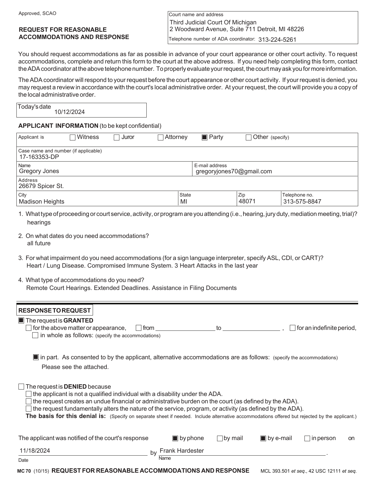
 View the Signed Letter (PDF)
View the Signed Letter (PDF)
Formal Complaint for Denial of ADA Accommodation -- Response, November 21, 2024
Chief Judge Patricia Fresard adopts the ADA Coordinator's determination and closes the complaint.
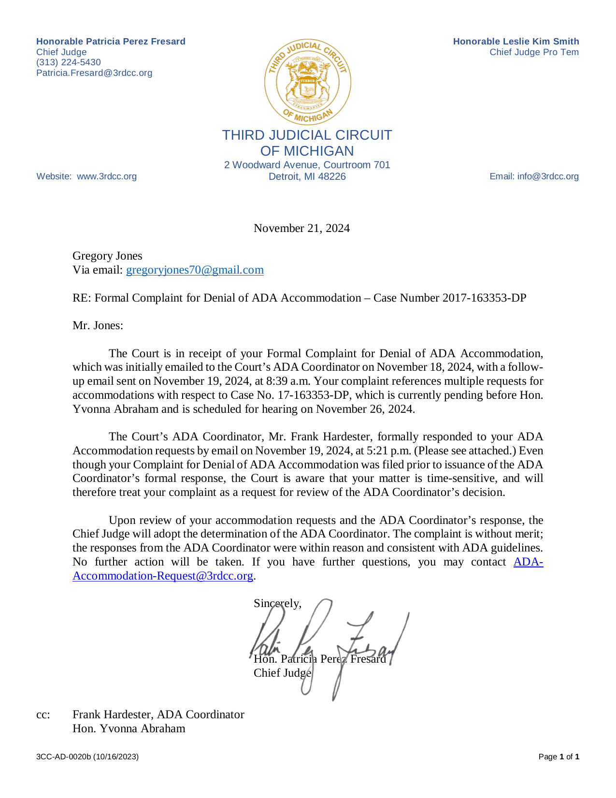
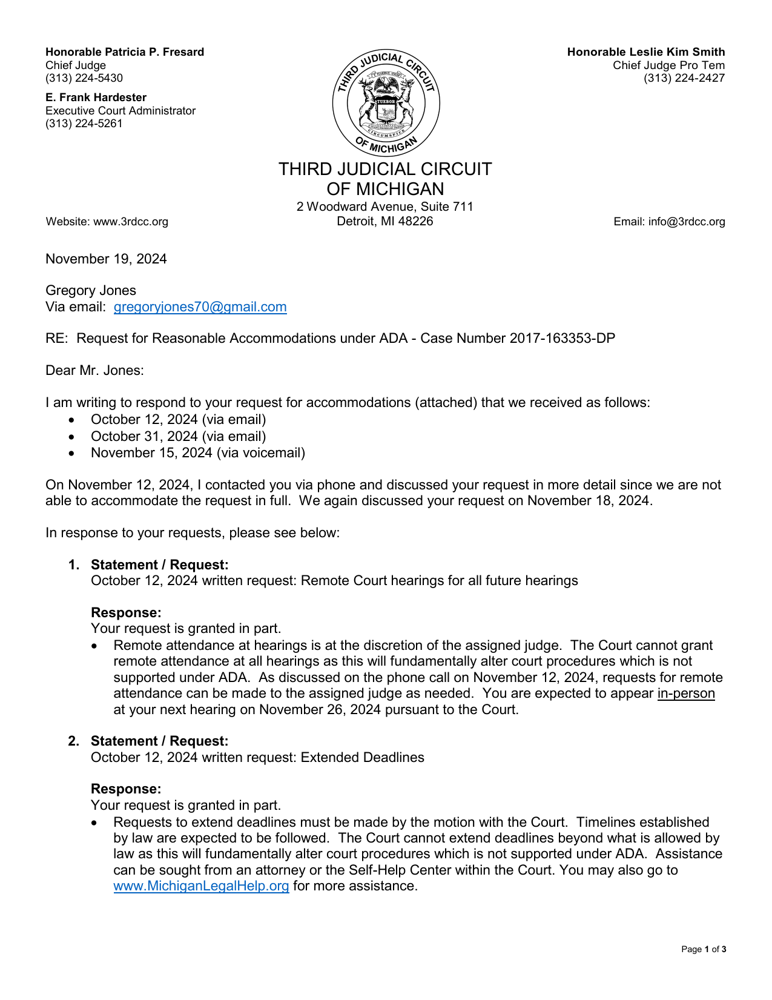
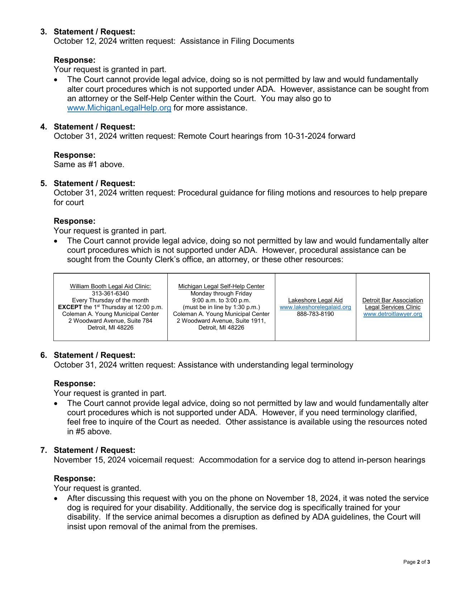
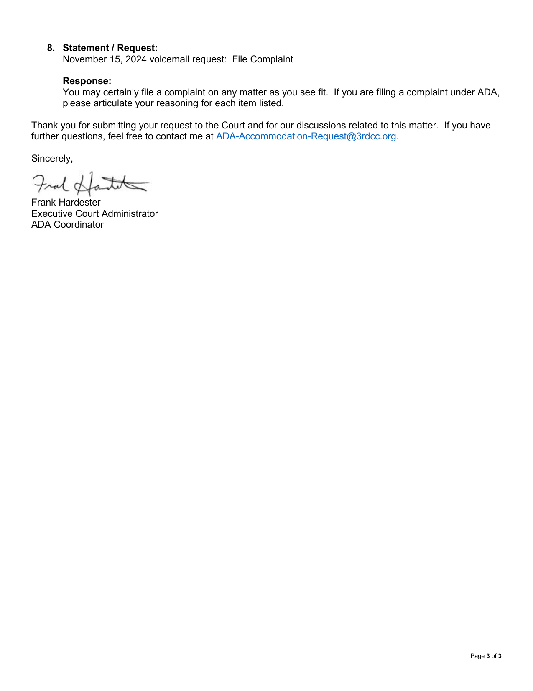

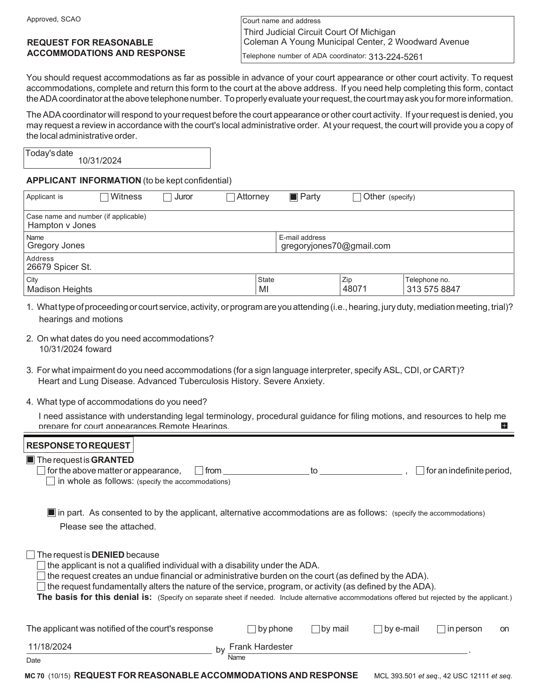
View the Signed Letter (PDF)ADA Grievance/Appeal Response -- November 19, 2025
General Counsel Frances Yturri denies the appeal of the November 4, 2025 remote-hearing denial.
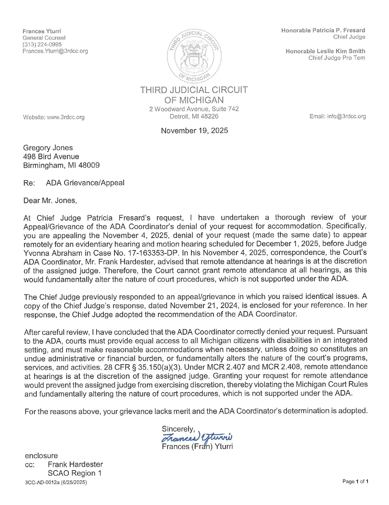
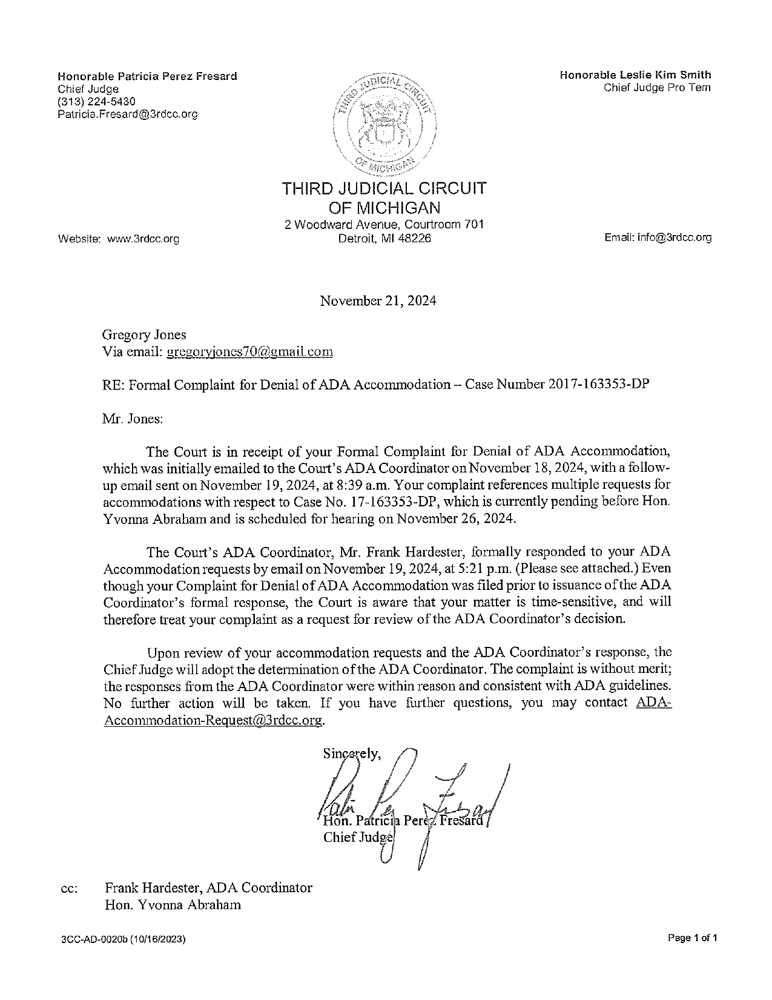
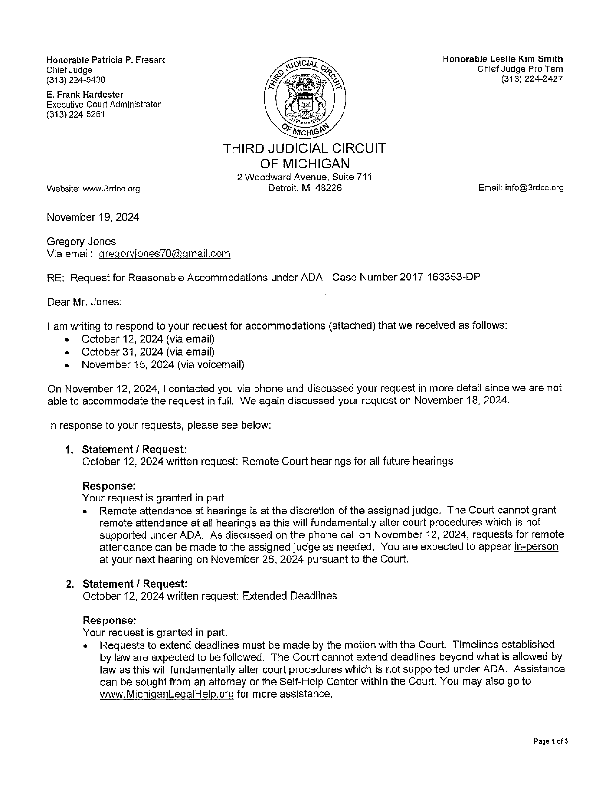
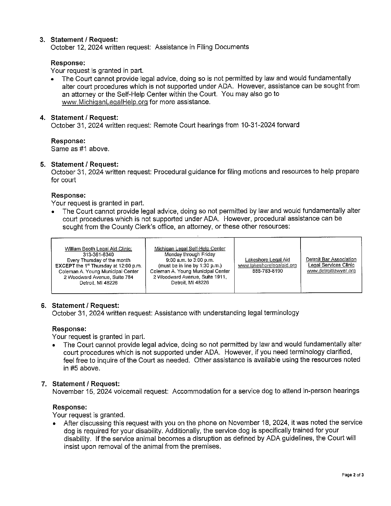
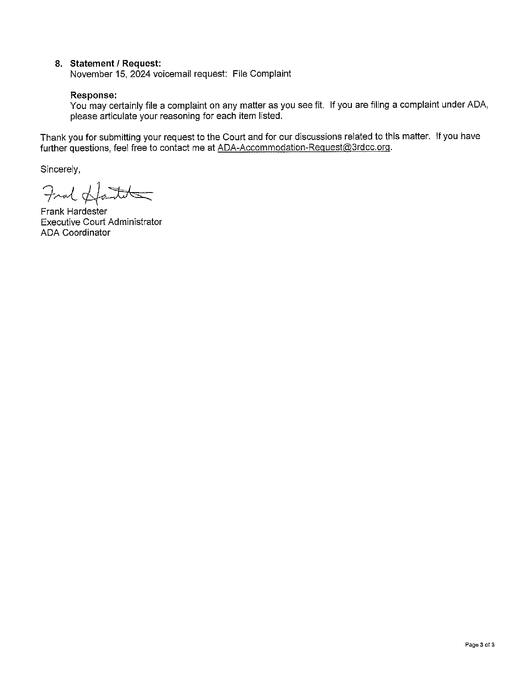
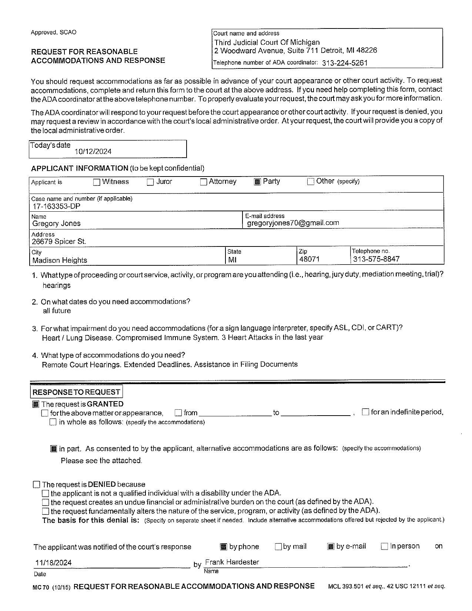
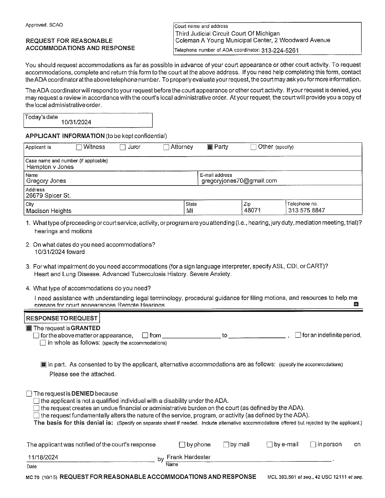
View the Signed Letter (PDF)